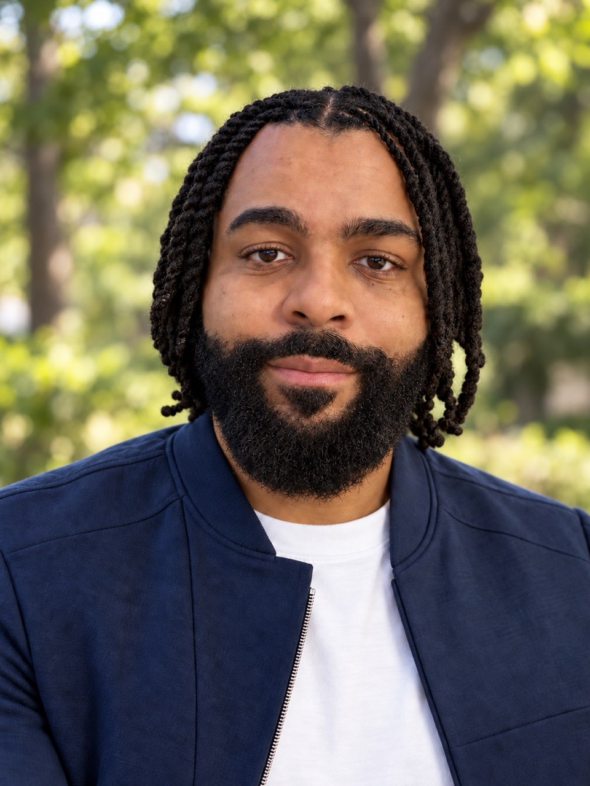
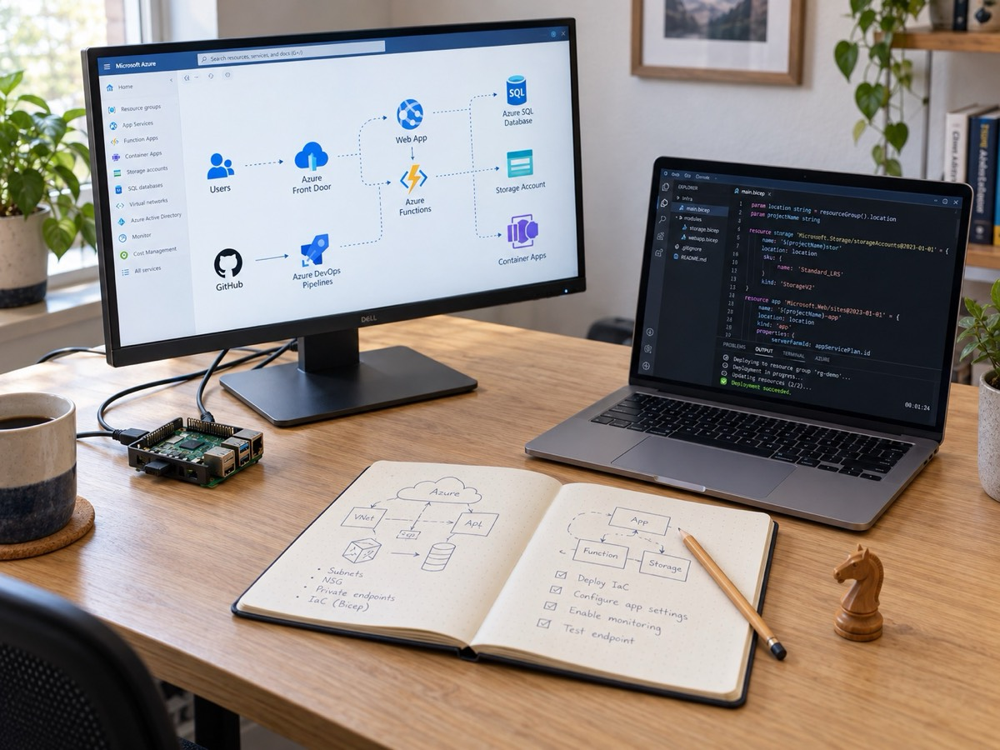

Azure Infrastructure
I helped organize landing zones and configure virtual networks, peering, private DNS, and firewall rules so services had a clearer place to run.
AZURE CLOUD ENGINEER
I’m Aaron, an Azure cloud engineer. Alongside cloud and development teams, I help shape clearer landing zones, connect services, review access, and make deployments repeatable with Bicep and GitHub.
Microsoft Certified Azure Administrator. Working with Azure, Bicep, and GitHub.

Our cloud team took on an Azure environment with limited documentation and resources that were hard to identify. I helped shape clearer landing zones and resource standards, connect services, and make deployments repeatable alongside the developers using the platform.

The platform is useful when people can understand it, change it safely, and get their applications running. These are the areas where I contributed to that goal.
I helped organize landing zones and configure virtual networks, peering, private DNS, and firewall rules so services had a clearer place to run.
I built Bicep templates with the cloud team and contributed GitHub workflows so deployments could be reviewed and repeated.
I audited roles and access paths to clarify who could reach which resources and why those permissions were needed.
Working with developers on applications and databases helped connect platform decisions to what the services needed to run.
BEYOND THE DAY JOB
Side projects give me a smaller place to test ideas: an agent system with explicit risk boundaries and a Raspberry Pi lab where Docker, DNS, and routing become tangible.
Hermes separates research, risk approval, and paper order handling. The project helps me examine where agents can assist and where independent rules and a human stop belong. Explore the agents →
On a Raspberry Pi, I run Docker services and trace requests through DNS and a reverse proxy. It is a practical way to investigate why a service can be running but still unreachable. Explore the home lab →
Working through an Azure platform challenge, an automation idea, or a lab puzzle? I’d be glad to hear what you’re building.
Connect on LinkedIn (opens in a new tab)